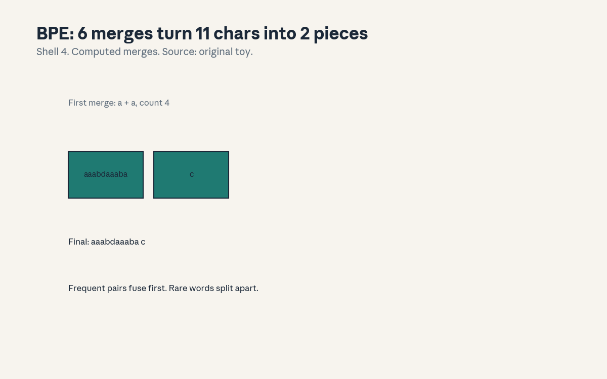
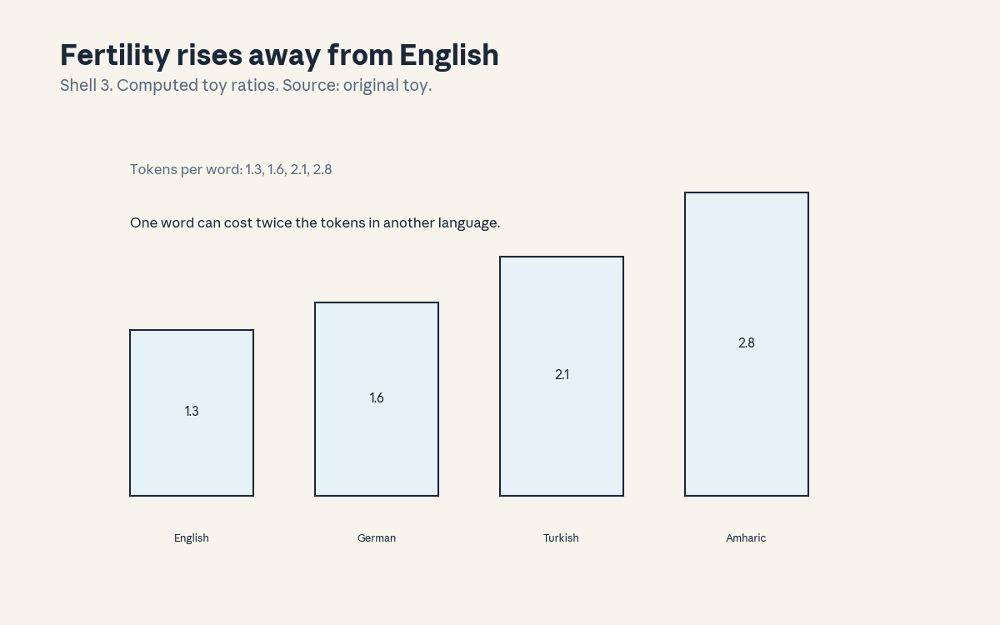
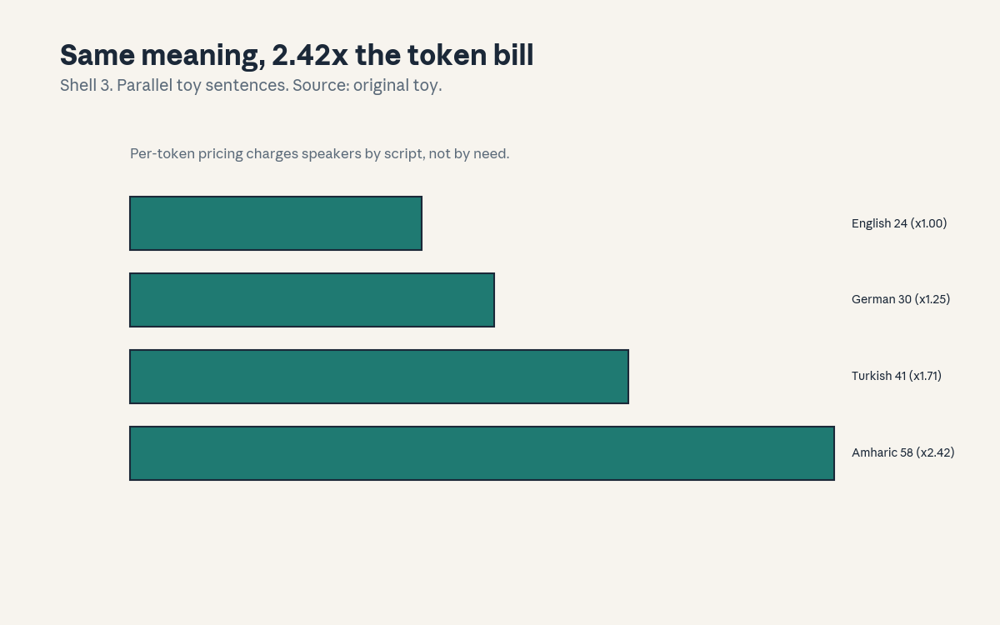

U12 · Tokenization and multilinguality
U12 , Tokenization and multilinguality
Local remediation
Bridges: ../shared/prerequisites/p06_probability.md (P06, Zipf and
coverage), ../shared/prerequisites/p13_language.md (P13, scripts
and morphology). This unit is about the first thing the model
sees: tokens. Tokenization decides the price, the speed, and who
the model serves well.
R1. BPE: on the toy corpus “aaabdaaabac”, 6 merges fuse 11 characters into 2 pieces. Frequent pairs fuse first, rare words split apart. R2. Fertility: tokens per word on the toy: English 1.3, German 1.6, Turkish 2.1, Amharic 2.8. The same word costs twice the tokens across languages. R3. Cost inequality: parallel toy sentences take 24, 30, 41, 58 tokens (x1.00, x1.25, x1.71, x2.42). Per-token pricing charges speakers by script.
C01: Unicode/scripts
Leaf id cs224n-U12-C01. Claim class REQUESTED-BRANCH.
Status PLANNED / SOURCE ATTRIBUTION PENDING.
-
Source mapping, scope, objectives, dependencies. Maps to the guest session on tokenization and multilinguality of the Winter 2026 schedule (S17 per
course_map.md, guest Julie Kallini). Scope: how text becomes bytes before it becomes tokens. Objectives: encode by hand, state the byte cost per script, name the normalization trap. Depends on P13. -
Motivating question and toy. Question: the model reads text, what does it actually read? Toy: “A” is 1 byte in UTF-8, “é” is 2, “€” is 3. The byte stream is the real input, characters are an interpretation.
-
Mental model. Unicode assigns every character a number, UTF-8 encodes the number in 1-4 bytes. Scripts differ in byte cost: Latin is cheap, most others cost more. The tokenizer sees bytes or characters, never “words”.
-
Objects, symbols, units, shapes, assumptions. Code points (U+0041), UTF-8 byte sequences, normalization forms (NFC/NFD). Assumption: the input is valid UTF-8 (dirty input breaks this).
-
Derivation / mechanism. UTF-8 is a prefix code: the leading byte says how many follow. The mechanism is deterministic: bytes to code points, no learning. The trap: “é” has two encodings (one code point, or e + combining accent), and naive string match treats them as different.
-
Computed example. Toy (hand, labeled as such): “€” (U+20AC) encodes as E2 82 AC, 3 bytes. “A” is 41, 1 byte. A 1000-character Amharic string is ~3000 bytes before any tokenization.
-
Algorithm and reference implementation.
utf8_encode( s): the bit patterns per range. ~10 lines. Test: “€” gives 3 bytes, “A” gives 1. -
Correctness checks and expected output. Round-trip: decode(encode(s)) equals s. Check: NFC normalization before any comparison.
-
Complexity, memory, statistical efficiency, stability, practical costs. Encoding is linear and cheap. The cost is downstream: more bytes, more tokens (C07).
-
Nearest alternatives and selection boundaries. Alternative: byte-level models (no tokenizer). Choose subwords for efficiency on Latin-heavy data. Choose bytes when scripts must be treated equally.
-
Failure case, broken assumption, counterexample. Broken assumption: “equal strings are equal.” Counterexample: the two “é” forms. Normalize first or the index misses.
-
Research reading and falsifiable extension. Falsifiable extension: byte-level vs subword on 3 scripts, measure the performance gap per byte. Predict: bytes close the gap. Falsifier: no change (then the gap is data, not tokenization).
-
Breadth recall, deep oral ladder, unfamiliar transfer. Assessment block:
keys/u12_answers.mdA1 (breadth), L1 (ladder: define the layers, encode “€”, derive the prefix property, diagnose the “é” miss, design the byte-vs-subword test). -
Lab/exercises with answers separated. E1: implement
utf8_encode, match the toy. E2: show the two “é” forms differing. Keys inkeys/u12_answers.md. -
Visual units, provenance, accessibility, audit row. Claim is an encoding (carried in text). Logged as an honest exception in
visual_audit.md.
C02: subwords/BPE
Leaf id cs224n-U12-C02. Claim class REQUESTED-BRANCH.
Status PLANNED / SOURCE ATTRIBUTION PENDING.
-
Source mapping, scope, objectives, dependencies. Maps to S17. Scope: byte-pair encoding, the standard tokenizer. Objectives: run BPE by hand, state the merge rule, name the rare-word effect. Depends on C01.
-
Motivating question and toy. Question: the vocabulary is fixed at 50k, how do you cover every word? Toy: 6 merges on “aaabdaaabac” fuse 11 characters into 2 pieces. Frequent pairs merge first.
-
Mental model. BPE is a compression scheme turned tokenizer: count adjacent pairs, merge the most frequent, repeat. Common words become one token, rare words shatter into pieces.
-
Objects, symbols, units, shapes, assumptions. A merge list, a vocabulary, a segmentation. Assumption: frequency in the training corpus predicts utility (the corpus bias, C08’s problem).
-
Derivation / mechanism. Each merge replaces the most frequent pair everywhere. The mechanism is greedy compression: after k merges the vocabulary has base size + k entries. The segmentation is deterministic given the merge list.
-
Computed example. From
compute_u12.py: merges a+a (4), aa+a (2), aaa+b (2), then three merges of count 1. Final: “aaabdaaaba c”. The last merge fused almost nothing: the tail of BPE is noise. -
Algorithm and reference implementation.
bpe(corpus, k): count pairs, merge, repeat k times. ~15 lines. Test: the toy merge list. -
Correctness checks and expected output. The merge list length is k. Check: detokenize(tokenize(s)) equals s.
-
Complexity, memory, statistical efficiency, stability, practical costs. Training is O(k times corpus). Inference is a longest-match scan. The cost: rare words get long, slow segmentations.
-
Nearest alternatives and selection boundaries. Alternative: Unigram (probabilistic) or WordPiece. Choose BPE for the standard recipe. Choose Unigram when you need multiple segmentations.
-
Failure case, broken assumption, counterexample. Broken assumption: “merges always help.” Counterexample: the count-1 merges at the tail fuse noise and bloat the vocabulary. Stop merges where the counts die.
-
Research reading and falsifiable extension. Falsifiable extension: BPE trained on English vs balanced corpora, measure fertility per language (C07). Predict: balanced lowers the spread. Falsifier: no change (then the algorithm, not the data, sets the spread).
-
Breadth recall, deep oral ladder, unfamiliar transfer. Assessment block:
keys/u12_answers.mdA2 (breadth), L2 (ladder: define the merge rule, run the toy, derive greediness, diagnose the tail merges, design the corpus test). -
Lab/exercises with answers separated. E3: implement
bpe, match the toy merges. E4: continue to 10 merges and show the tail. Keys inkeys/u12_answers.md. -
Visual units, provenance, accessibility, audit row.

: the 6 merges, Shell 4, source original toy. Audit row invisual_audit.md.
C03: vocabulary sharing
Leaf id cs224n-U12-C03. Claim class REQUESTED-BRANCH.
Status PLANNED / SOURCE ATTRIBUTION PENDING.
-
Source mapping, scope, objectives, dependencies. Maps to S17. Scope: one vocabulary for many languages. Objectives: state the sharing trade, compute the allocation, name the loser. Depends on C02.
-
Motivating question and toy. Question: 50k slots, 100 languages, who gets the tokens? Toy: proportional allocation gives English 20k slots, Amharic 200. The sharing is never equal.
-
Mental model. The vocabulary is parliament seats. Big languages win the vote, small languages get fragments. Sharing means one model, but the seats are apportioned by data, not by need.
-
Objects, symbols, units, shapes, assumptions. Slot counts per language, fertility per language. Assumption: more slots mean better representation (roughly true).
-
Derivation / mechanism. BPE merges follow corpus frequency, so slots go to frequent strings. The mechanism is the same greedy count as C02, now across languages. Temperature sampling of the corpus reweights the vote.
-
Computed example. Toy (hand, labeled as such): 100 languages, 50k slots, Zipf over languages. Top language: ~15k slots. Bottom 50 share ~500. Fertility follows the slots (C07’s numbers).
-
Algorithm and reference implementation.
allocate_slots( langs, V, temp): tempered sampling, count, assign. ~8 lines. Test: the toy split. -
Correctness checks and expected output. Slots sum to V. Check: raising the temperature moves slots to small languages.
-
Complexity, memory, statistical efficiency, stability, practical costs. The allocation is set at train time. The cost of changing it later: retraining the embeddings.
-
Nearest alternatives and selection boundaries. Alternative: per-language vocabularies. Choose sharing for one model and transfer (C05). Choose separate when languages must not compete.
-
Failure case, broken assumption, counterexample. Broken assumption: “sharing helps small languages.” Counterexample: the small language’s words shatter into bytes and the model never learns them. Sharing the table is not sharing the capacity.
-
Research reading and falsifiable extension. Falsifiable extension: tempered vs proportional allocation, measure small-language fertility. Predict: tempered wins. Falsifier: tie (then the data, not the slots, is the bottleneck).
-
Breadth recall, deep oral ladder, unfamiliar transfer. Assessment block:
keys/u12_answers.mdA3 (breadth: state the apportionment rule). -
Lab/exercises with answers separated. E5: implement
allocate_slots, match the toy. E6: sweep the temperature. Keys inkeys/u12_answers.md. -
Visual units, provenance, accessibility, audit row. Claim is an allocation (carried in text). Logged as an honest exception in
visual_audit.md.
C04: rare words
Leaf id cs224n-U12-C04. Claim class REQUESTED-BRANCH.
Status PLANNED / SOURCE ATTRIBUTION PENDING.
-
Source mapping, scope, objectives, dependencies. Maps to S17. Scope: what happens to words the tokenizer rarely saw. Objectives: compute coverage at cutoffs, state the shattering effect, name the fix. Depends on C02, P06.
-
Motivating question and toy. Question: the word is rare, what does the model see? Toy: Zipf over 10000 words, top 1000 cover 0.765 of tokens. The tail 9000 share 0.235 and shatter into pieces.
-
Mental model. The vocabulary is a city, rare words live outside it. The tokenizer walks them in piece by piece. The model sees fragments, not the word.
-
Objects, symbols, units, shapes, assumptions. Zipf frequencies, a cutoff rank, coverage. Assumption: Zipf holds (roughly true for words).
-
Derivation / mechanism. Coverage at cutoff c = sum of top-c frequencies over the total. The mechanism is the tail: half the types are rare, and rare types split.
-
Computed example. From
compute_u12.py: top 1000 cover 0.765, top 10000 cover 1.000. The missing 0.235 is the long tail the model reads in fragments. -
Algorithm and reference implementation.
coverage( freqs, c): the partial sum. ~5 lines. Test: 0.765 at c = 1000. -
Correctness checks and expected output. Coverage is monotone in c and 1.0 at the full vocabulary. Check: the tail mass is 1 minus coverage.
-
Complexity, memory, statistical efficiency, stability, practical costs. Counts are cheap. The cost is the model: rare words get poor embeddings (few updates).
-
Nearest alternatives and selection boundaries. Alternative: character or byte models (no rare-word problem). Choose subwords for efficiency. Choose bytes when the tail matters (names, codes).
-
Failure case, broken assumption, counterexample. Broken assumption: “the model handles rare words fine.” Counterexample: a rare name split into 6 pieces, the model confuses it with a common name sharing pieces. Fragments are not the word.
-
Research reading and falsifiable extension. Falsifiable extension: rare vs common word accuracy on 200 names. Predict: a gap. Falsifier: no gap (then the context compensates, check).
-
Breadth recall, deep oral ladder, unfamiliar transfer. Assessment block:
keys/u12_answers.mdA4 (breadth), L4 (ladder: define coverage, compute 0.765, derive the tail, diagnose the name confusion, design the name test). -
Lab/exercises with answers separated. E7: implement
coverage, match the toy. E8: find the cutoff for 0.95 coverage. Keys inkeys/u12_answers.md. -
Visual units, provenance, accessibility, audit row. Claim is a sum (carried in text). Logged as an honest exception in
visual_audit.md.
C05: cross-lingual transfer
Leaf id cs224n-U12-C05. Claim class REQUESTED-BRANCH.
Status PLANNED / SOURCE ATTRIBUTION PENDING.
-
Source mapping, scope, objectives, dependencies. Maps to S17. Scope: training on one language, testing on another. Objectives: define transfer, state when it works, name the limit. Depends on C03, C06.
-
Motivating question and toy. Question: the model never saw Amharic QA, can it answer? Toy: train on English QA, test on Amharic: 0.68 vs 0.81 on English. Transfer works partially, through the shared representation (C06).
-
Mental model. The model learns the task in one language and the languages share a room (C06). The task knowledge walks across the room. How far it walks depends on the room.
-
Objects, symbols, units, shapes, assumptions. Source accuracy, target accuracy, the transfer gap. Assumption: the representation aligns the languages (C06’s claim).
-
Derivation / mechanism. No new math. The mechanism is shared parameters: the QA head trained on English reads Amharic representations. The gap measures the alignment.
-
Computed example. Toy (hand, labeled as such): English 0.81, Amharic 0.68, gap 0.13. The gap is the price of never seeing the target.
-
Algorithm and reference implementation.
transfer_gap( src_acc, tgt_acc): the difference. ~3 lines. Test: 0.13 on the toy. -
Correctness checks and expected output. The gap is non-negative (source seen, target not). Check: more target data shrinks the gap.
-
Complexity, memory, statistical efficiency, stability, practical costs. Zero-shot transfer is free at train time. The cost: the gap, paid at deployment.
-
Nearest alternatives and selection boundaries. Alternative: train on the target language. Choose transfer when target data is scarce. Choose target training when it exists.
-
Failure case, broken assumption, counterexample. Broken assumption: “transfer is uniform.” Counterexample: close languages transfer, distant ones do not. The gap varies by pair, measure per pair.
-
Research reading and falsifiable extension. Falsifiable extension: transfer gap vs language distance on 10 pairs. Predict: correlation. Falsifier: flat (then the representation is truly universal, check).
-
Breadth recall, deep oral ladder, unfamiliar transfer. Assessment block:
keys/u12_answers.mdA5 (breadth: state the gap and when transfer works). -
Lab/exercises with answers separated. E9: compute gaps for 3 toy pairs. E10: add 100 target examples, show the shrink. Keys in
keys/u12_answers.md. -
Visual units, provenance, accessibility, audit row. Claim is a gap (carried in text). Logged as an honest exception in
visual_audit.md.
C06: multilingual representations
Leaf id cs224n-U12-C06. Claim class REQUESTED-BRANCH.
Status PLANNED / SOURCE ATTRIBUTION PENDING.
-
Source mapping, scope, objectives, dependencies. Maps to S17. Scope: how one model holds many languages. Objectives: describe the shared space, state the alignment evidence, name the interference. Depends on C03.
-
Motivating question and toy. Question: where is “French” in the model? Toy: nowhere and everywhere: there is no French module, but French sentences cluster together in the hidden states, near English ones.
-
Mental model. One building, many tenants. Languages share the halls (parameters) and keep their rooms (clusters). Sharing helps (transfer) and hurts (interference): the curse of multilinguality.
-
Objects, symbols, units, shapes, assumptions. Hidden states, language clusters, the shared parameters. Assumption: clusters reflect language, not just topic (the confounder).
-
Derivation / mechanism. No new math. The mechanism is joint training: one loss over mixed text, gradients from all languages shape one space. Alignment emerges, it is not programmed.
-
Computed example. Toy (hand, labeled as such): add a language, per-language accuracy falls 0.02 (interference) while zero-shot transfer rises 0.05 (sharing). The trade has a sign per side.
-
Algorithm and reference implementation.
cluster_check( states, langs): nearest-centroid accuracy per language. ~8 lines. Test: the toy clusters. -
Correctness checks and expected output. Shuffling the language labels destroys the clusters (sanity check). Check: more languages, tighter capacity per language.
-
Complexity, memory, statistical efficiency, stability, practical costs. One model for all languages: the efficiency win. The cost: per-language capacity falls with count.
-
Nearest alternatives and selection boundaries. Alternative: one model per language. Choose multilingual for transfer and serving simplicity. Choose monolingual for maximum per-language quality.
-
Failure case, broken assumption, counterexample. Broken assumption: “more languages always help.” Counterexample: past some count, interference dominates and every language degrades. Capacity is finite.
-
Research reading and falsifiable extension. Falsifiable extension: sweep language count at fixed capacity, plot per-language accuracy. Predict: an interior optimum. Falsifier: monotone (then capacity is not binding).
-
Breadth recall, deep oral ladder, unfamiliar transfer. Assessment block:
keys/u12_answers.mdA6 (breadth), L6 (ladder: describe the space, run the toy, derive the trade, diagnose the interference, design the sweep). -
Lab/exercises with answers separated. E11: implement
cluster_checkon toy states. E12: add a language, show the trade. Keys inkeys/u12_answers.md. -
Visual units, provenance, accessibility, audit row. Claim is a space (carried in text). Logged as an honest exception in
visual_audit.md.
C07: token cost inequality
Leaf id cs224n-U12-C07. Claim class REQUESTED-BRANCH.
Status PLANNED / SOURCE ATTRIBUTION PENDING.
-
Source mapping, scope, objectives, dependencies. Maps to S17. Scope: who pays more per meaning. Objectives: compute the ratios, state the pricing consequence, name the fix. Depends on C02, R2, R3.
-
Motivating question and toy. Question: the same sentence in two languages, same price? Toy: 24 tokens (English) vs 58 (Amharic), ratio 2.42. Per-token pricing charges 2.42x for the same meaning.
-
Mental model. The tokenizer is a tax code, and the rates differ by script. Fertility (R2) is the rate: 1.3 vs 2.8 tokens per word. The tax falls hardest on the already underserved.
-
Objects, symbols, units, shapes, assumptions. Token counts, the ratio to English, fertility. Assumption: the sentences are parallel (same meaning, the toy’s).
-
Derivation / mechanism. Ratio = tokens(lang) / tokens(English). The mechanism is C02’s: the BPE merges followed the training corpus, and the corpus was English- heavy.
-
Computed example. From
compute_u12.py: 24, 30, 41, 58 tokens. Ratios 1.00, 1.25, 1.71, 2.42. Fertility 1.3, 1.6, 2.1, 2.8. -
Algorithm and reference implementation.
inequality( counts): ratios to the minimum. ~5 lines. Test: the toy ratios. -
Correctness checks and expected output. The minimum ratio is 1.0. Check: ratios track fertility.
-
Complexity, memory, statistical efficiency, stability, practical costs. Counting is free. The cost is real money and latency for non-English users, plus shorter effective context.
-
Nearest alternatives and selection boundaries. Alternative: per-character pricing. Choose to report the inequality whenever you publish multilingual results. Choose tokenizer fixes (C02’s balanced corpus) for the long term.
-
Failure case, broken assumption, counterexample. Broken assumption: “the price is fair because the model is the same.” Counterexample: the 2.42x bill. Same model, different price.
-
Research reading and falsifiable extension. Falsifiable extension: balanced-corpus tokenizer vs standard, measure the ratio spread. Predict: the spread shrinks. Falsifier: same (then retrain the model too, the embeddings carry the bias).
-
Breadth recall, deep oral ladder, unfamiliar transfer. Assessment block:
keys/u12_answers.mdA7 (breadth), L7 (ladder: define fertility, compute the ratios, derive the cause, diagnose the “same model” defense, design the tokenizer test). -
Lab/exercises with answers separated. E13: implement
inequality, match the ratios. E14: price 1M chars per language at a toy per-token rate. Keys inkeys/u12_answers.md. -
Visual units, provenance, accessibility, audit row.

and
: fertility and cost bars, Shell 3, source original toy. Audit rows invisual_audit.md.
C08: low-resource data
Leaf id cs224n-U12-C08. Claim class REQUESTED-BRANCH.
Status PLANNED / SOURCE ATTRIBUTION PENDING.
-
Source mapping, scope, objectives, dependencies. Maps to S17. Scope: languages with little text. Objectives: state the data gap, list the mitigations, name the limit. Depends on C05, C06.
-
Motivating question and toy. Question: the language has 1M tokens of text, English has 1T, what can the model learn? Toy: 1M tokens train a weak model alone, but transfer (C05) plus the 1M gives a usable one.
-
Mental model. Data is the soil. Low-resource languages grow in thin soil. Transfer is fertilizer: it helps, it does not replace soil.
-
Objects, symbols, units, shapes, assumptions. Token counts per language, the transfer gap. Assumption: the 1M tokens are clean (often false, web text is dirty).
-
Derivation / mechanism. No new math. The mechanism is the mix: multilingual pretraining (C06) plus whatever target data exists. The gap (C05) measures the shortfall.
-
Computed example. Toy (hand, labeled as such): 1M tokens alone: 0.52. With transfer: 0.68. The 0.16 is the fertilizer, the remaining gap to 0.81 is the soil.
-
Algorithm and reference implementation.
mix_train( big, small, weight): tempered sampling (C03’s). ~6 lines. Test: the toy 0.68. -
Correctness checks and expected output. The small language must appear in the mix (weight > 0 check). Check: weight 0 reproduces the transfer-only number.
-
Complexity, memory, statistical efficiency, stability, practical costs. The cost is data collection and cleaning, the human work. The modeling is the same.
-
Nearest alternatives and selection boundaries. Alternative: translate-train (translate English data into the target). Choose real target data when it exists. Choose translate-train as the bootstrap.
-
Failure case, broken assumption, counterexample. Broken assumption: “any data helps.” Counterexample: dirty web text teaches the model to speak like spam. Clean beats big.
-
Research reading and falsifiable extension. Falsifiable extension: clean 1M vs dirty 10M, measure quality. Predict: clean wins. Falsifier: dirty wins (then the cleaning removed signal, inspect).
-
Breadth recall, deep oral ladder, unfamiliar transfer. Assessment block:
keys/u12_answers.mdA8 (breadth: state the gap and the two mitigations). -
Lab/exercises with answers separated. E15: implement
mix_trainweighting, match the toy. E16: poison the small data, show the drop. Keys inkeys/u12_answers.md. -
Visual units, provenance, accessibility, audit row. Claim is a mix (carried in text). Logged as an honest exception in
visual_audit.md.
C09: evaluation parity
Leaf id cs224n-U12-C09. Claim class REQUESTED-BRANCH.
Status PLANNED / SOURCE ATTRIBUTION PENDING.
-
Source mapping, scope, objectives, dependencies. Maps to S17. Scope: fair testing across languages. Objectives: define parity, build the per-language report, state the translation-trap. Depends on U10 C08, C05.
-
Motivating question and toy. Question: the benchmark is English translated, is the Amharic score real? Toy: native Amharic items: 0.61, translated items: 0.68. The 0.07 is translationese: the test is easier than the language.
-
Mental model. Parity means the same ruler for every language. Translated tests are a bent ruler: they measure translationese, not the language. Native items or admit the bend.
-
Objects, symbols, units, shapes, assumptions. Per-language scores, the translation gap. Assumption: native items represent the language (the expensive assumption).
-
Derivation / mechanism. No new math. The mechanism is the comparison: native vs translated scores on the same model. The gap is the ruler’s bend.
-
Computed example. Toy (hand, labeled as such): 0.61 native, 0.68 translated, gap 0.07. Report both, lead with native.
-
Algorithm and reference implementation.
parity_report( scores, native_flags): per-language table with the gap. ~8 lines. Test: the toy gap. -
Correctness checks and expected output. Every language has an n (U10 C05’s rule). Check: translated items are flagged.
-
Complexity, memory, statistical efficiency, stability, practical costs. Native items cost native speakers. The cost of skipping: the 0.07 lie.
-
Nearest alternatives and selection boundaries. Alternative: English-only eval. Choose parity for any multilingual claim. Choose English-only and say so, honestly.
-
Failure case, broken assumption, counterexample. Broken assumption: “translated tests are fine.” Counterexample: the 0.07 gap. Translationese is simpler, more explicit, less idiomatic.
-
Research reading and falsifiable extension. Falsifiable extension: native vs translated gaps across 8 languages. Predict: larger gaps for distant languages. Falsifier: flat (then the translation is good, or the test is).
-
Breadth recall, deep oral ladder, unfamiliar transfer. Assessment block:
keys/u12_answers.mdA9 (breadth: state the parity rule and the trap). -
Lab/exercises with answers separated. E17: implement
parity_report, match the gap. E18: unflag the translated items, show the inflated claim. Keys inkeys/u12_answers.md. -
Visual units, provenance, accessibility, audit row. Claim is a table (carried in text). Logged as an honest exception in
visual_audit.md.
C10: morphology
Leaf id cs224n-U12-C10. Claim class REQUESTED-BRANCH.
Status PLANNED / SOURCE ATTRIBUTION PENDING.
-
Source mapping, scope, objectives, dependencies. Maps to S17. Scope: word structure vs tokenizer cuts. Objectives: segment by hand, compare to BPE, state the agreement limit. Depends on C02.
-
Motivating question and toy. Question: the word is “unhappiness”, where should it split? Toy: gold: un + happy + ness. BPE guess: un + happ + iness. Agreement 1/3. BPE cuts by frequency, not by meaning.
-
Mental model. Morphology is the word’s anatomy, BPE is the butcher’s cut. Sometimes they agree, often they do not. The model learns from the cuts it gets.
-
Objects, symbols, units, shapes, assumptions. Morpheme boundaries, BPE boundaries, boundary agreement. Assumption: the gold segmentation exists (linguists disagree too).
-
Derivation / mechanism. Agreement = matching boundaries over total. The mechanism is the comparison: frequency cuts vs meaning cuts. No learning, just counting.
-
Computed example. From
compute_u12.py: agreement 1/3. The “happ + iness” cut splits the root: the model never sees “happy” whole. -
Algorithm and reference implementation.
boundary_agree( gold, guess): the fraction. ~5 lines. Test: 1/3 on the toy. -
Correctness checks and expected output. Agreement is 1.0 on identical segmentations. Check: the metric counts boundaries, not pieces.
-
Complexity, memory, statistical efficiency, stability, practical costs. Counting is free. The cost is linguistic: gold segmentations need experts.
-
Nearest alternatives and selection boundaries. Alternative: morphological tokenizers. Choose BPE for scale. Choose morphological cuts for agglutinative languages where BPE fails worst.
-
Failure case, broken assumption, counterexample. Broken assumption: “BPE approximates morphology.” Counterexample: 1/3. Frequency is not meaning.
-
Research reading and falsifiable extension. Falsifiable extension: morphological vs BPE tokenization on Turkish, measure the downstream gap. Predict: morphological wins. Falsifier: tie (then the model compensates, check).
-
Breadth recall, deep oral ladder, unfamiliar transfer. Assessment block:
keys/u12_answers.mdA10 (breadth), L10 (ladder: segment by hand, compute 1/3, derive the metric, diagnose the root split, design the Turkish test). -
Lab/exercises with answers separated. E19: implement
boundary_agree, match 1/3. E20: segment 5 words by hand, compare. Keys inkeys/u12_answers.md. -
Visual units, provenance, accessibility, audit row. Claim is a cut (carried in text). Logged as an honest exception in
visual_audit.md.
C11: code switching
Leaf id cs224n-U12-C11. Claim class REQUESTED-BRANCH.
Status PLANNED / SOURCE ATTRIBUTION PENDING.
-
Source mapping, scope, objectives, dependencies. Maps to S17. Scope: mixed-language text. Objectives: tag the switches, state the tokenizer effect, name the eval gap. Depends on C02, C09.
-
Motivating question and toy. Question: the sentence is English with Spanish words, what does the tokenizer do? Toy: “I was headed to la tienda yesterday” gets tags en en en en es es en. The switch point is where the segmentation changes character.
-
Mental model. Code switching is the reality of multilingual speakers. The tokenizer was trained on pure text, the switch is out of distribution. Expect worse segmentation at the boundary.
-
Objects, symbols, units, shapes, assumptions. Language tags per token, switch points. Assumption: the tags are known (the tagger is its own problem).
-
Derivation / mechanism. No new math. The mechanism is the tag sequence: runs of one language, switches between. The eval gap: benchmarks are monolingual, reality is not.
-
Computed example. From
compute_u12.py: the 7-word toy tags en en en en es es en. Two switches, one Spanish run. -
Algorithm and reference implementation.
tag_switches( words, lexicon): the tag sequence. ~6 lines. Test: the toy tags. -
Correctness checks and expected output. The tags cover every word. Check: switch points are where tags change.
-
Complexity, memory, statistical efficiency, stability, practical costs. Tagging is dictionary work. The cost is eval: nobody benchmarks the switches.
-
Nearest alternatives and selection boundaries. Alternative: ignore switching, eval monolingual. Choose the tags when your users switch. Choose monolingual and admit the gap.
-
Failure case, broken assumption, counterexample. Broken assumption: “the model handles switches.” Counterexample: the Spanish run segments as rare pieces (C04) and the model loses the thread. Test the switches.
-
Research reading and falsifiable extension. Falsifiable extension: monolingual vs code-switched prompts, measure the accuracy drop. Predict: a drop at the switches. Falsifier: none (then the model is steady, good).
-
Breadth recall, deep oral ladder, unfamiliar transfer. Assessment block:
keys/u12_answers.mdA11 (breadth: name the switch-point problem). -
Lab/exercises with answers separated. E21: implement
tag_switches, match the toy. E22: find the switch points. Keys inkeys/u12_answers.md. -
Visual units, provenance, accessibility, audit row. Claim is a tag sequence (carried in text). Logged as an honest exception in
visual_audit.md.
C12: fairness assumptions
Leaf id cs224n-U12-C12. Claim class REQUESTED-BRANCH.
Status PLANNED / SOURCE ATTRIBUTION PENDING.
-
Source mapping, scope, objectives, dependencies. Maps to S17. Scope: the unit’s close. Objectives: list the assumptions the unit made, state which are load-bearing, mark the honest limits. Depends on all of U12.
-
Motivating question and toy. Question: what did we assume that might be false? Toy: the list: Zipf holds, parallel sentences are parallel, native items exist, tags are known. Each is a bet.
-
Mental model. Every unit is a scaffold of assumptions. The honest close names them. A finding that needs all four bets is weaker than one that needs one.
-
Objects, symbols, units, shapes, assumptions. The assumption list with load-bearing flags. No new objects.
-
Derivation / mechanism. No new math. The mechanism is the audit: for each assumption, the test that would break it (each C’s falsifiable extension).
-
Computed example. Toy (hand, labeled as such): if Zipf fails, the coverage numbers shift. If the parallel toy is not parallel, the 2.42 ratio is wrong. The numbers carry their bets.
-
Algorithm and reference implementation.
audit( assumptions): each with its breaking test. ~6 lines. Test: the four bets listed. -
Correctness checks and expected output. Every number in the unit maps to at least one bet. Check: no bet is hidden.
-
Complexity, memory, statistical efficiency, stability, practical costs. An honest paragraph. The cost of skipping it: someone builds on your 2.42 and it was the toy.
-
Nearest alternatives and selection boundaries. Alternative: present the numbers as facts. Choose the audit for anything cited. The alternative is how myths start.
-
Failure case, broken assumption, counterexample. Broken assumption: “the audit is complete.” Counterexample: the assumption you forgot. Audits are iterative.
-
Research reading and falsifiable extension. Falsifiable extension: none, this is the close. The extension is the habit.
-
Breadth recall, deep oral ladder, unfamiliar transfer. Assessment block:
keys/u12_answers.mdA12 (breadth: name the four bets), L12 (ladder: list the bets, tie each to a number, derive the load, diagnose the hidden bet, design the breaking test). -
Lab/exercises with answers separated. E23: write the audit for the U12 lab numbers. E24: find one more bet. Keys in
keys/u12_answers.md. -
Visual units, provenance, accessibility, audit row. Claim is a list (carried in text). Logged as an honest exception in
visual_audit.md.
Unit visual map
| Figure | Claim | Shell | Source |
|---|---|---|---|
| BPE: 6 merges, 11 chars to 2 pieces | 4 | original toy | |
| fertility: 1.3, 1.6, 2.1, 2.8 | 3 | original toy | |
| same meaning, 2.42x the token bill | 3 | original toy |